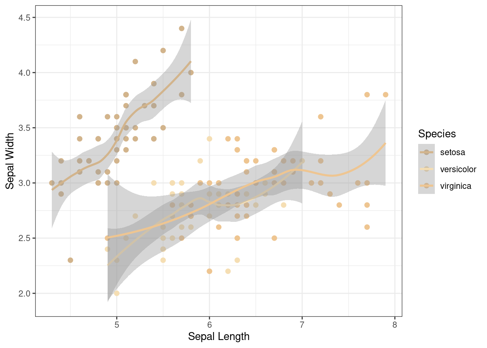

Working on one computer, navigate to the repo created for this activity and fork the repo. The person whose computer you are working on will be “partner 1” for the remainder of this activity.
2 Add a collaborator
Add your partner as a collaborator to the forked repo using their GitHub username.
3 Clone the Repo
Now each working on your own, follow the steps to clone the repo to your machine.
4 Explore the Code
In the new project, open script.R in RStudio. Ensure you are working with the most up-to-date version by pulling any changes before diving into the code.
You’ll note that the code is to create a horribly colored plot of Sepal.Length vs Sepal.Width data from iris dataset. It may also look familiar from our discussion of merge conflicts.
`geom_smooth()` using method = 'loess' and formula = 'y ~ x'

5 Modify the code
5.1 Without a conflict…
Edit different parts of the code than your partner:
Partner 1 - Add your name or a comment to line 6 (# Partner 1:)
Partner 2 - Add your name or a comment to line 8 (# Partner 2:)
Now that both of you have edited your file, partner 1 should stage, commit, and push their changes to GitHub.
Have partner two pull the new changes. What happens?
Resolve the error message (see the step-by-step if you need help) and try pushing your changes again. Was it successful? What does the message mean?
5.2 With a conflict…
Now that we have successfully experienced the joys of an automatic merge, we will force a conflict. You may have noticed that the color palette for this figure could be better.
Without consulting with your partner, choose a new color palette for this figure by changing the names in scale_color_manual() and save the changes.
{kind=link}